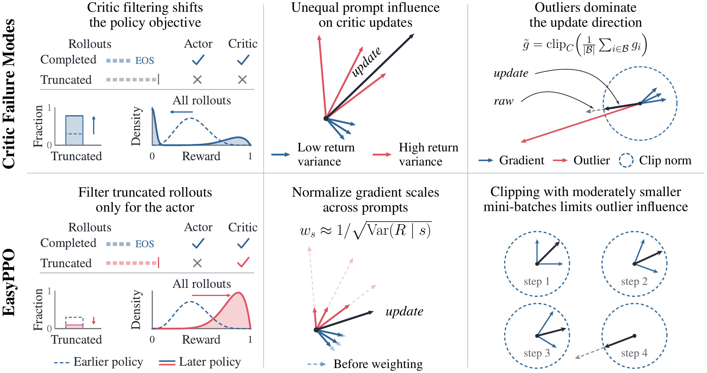
The idea in a minute
PPO[1] uses a critic to estimate how much reward a response is likely to earn. The actor uses that estimate to decide which responses to reinforce. If critic learning becomes unstable, the actor can lose a useful training signal.
Keep the critic’s training data complete. Filter unfinished responses from actor updates, but keep them when training the critic.
Balance the noise across prompts. Weight each prompt’s critic loss by the inverse standard deviation of its sampled returns.
Limit how far outliers reach. Use moderately smaller critic mini-batches, with gradient clipping at each update.
You can keep the standard PPO actor update or use your preferred actor-side improvements.
A better score can hide more unfinished responses
A response that hits the length limit may receive a low reward simply because it never finished. Filtering these responses from actor updates is common. In PPO, it is tempting to remove them from critic training too.
But then the critic only sees responses that finish. It learns their average reward instead of the average over all responses. Our analysis shows that, in an idealized accurate-critic setting, filtering both networks changes the policy objective to reward conditioned on completion. That score can improve even as more responses hit the length limit.
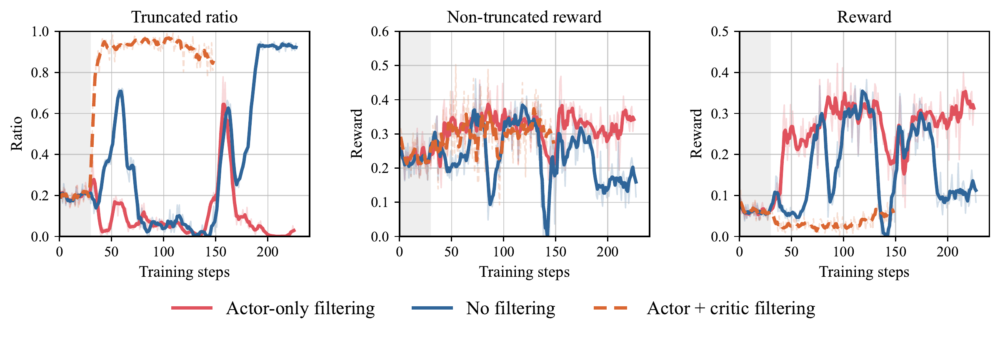
A noisier prompt should not dominate the update
The same prompt can produce responses with very different rewards. Some prompts have consistent returns; others vary widely, especially in continuous-score coding tasks. We call this variation return noise.
The critic tries to predict the mean return, but trains on individual samples. Even when its prediction is accurate, a noisy sample can produce a large gradient. For squared-error loss and a linear value head, the expected squared gradient contains both prediction error and return variance:
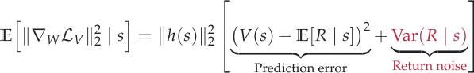
Here, s is a token prefix, R is its sampled return, and the value head predicts V(s) = W⊤h(s). As predictions improve, the noise term can dominate this second moment. Prompts with more variable returns can therefore have disproportionate influence on finite-batch updates.
Normalize the noise, keep the prediction target
Noise-normalized critic regression divides the critic loss by the return standard deviation. If we knew the true conditional standard deviation at every prefix, setting w(s) to its inverse would give:
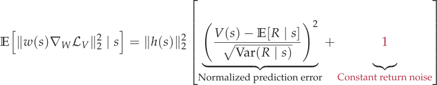
The return-noise term is now one. Apart from the feature norm, the second moment reflects the normalized prediction error. Positive population weights preserve the optimal mean prediction while removing return-noise scale as a source of imbalance.
From rollout groups to a weighted loss
In practice, we estimate one standard deviation per prompt from its group of n sampled returns, including truncated responses. We reuse that estimate at every token in the response. Writing R̄s for the group’s mean return and ℬ for the prompt batch, we compute:
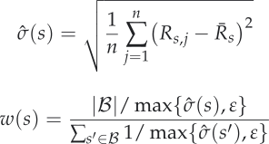
The floor ε prevents near-zero variance from producing an enormous weight. Dividing by the batch average keeps the prompt weights at mean one, so normalization does not arbitrarily rescale the whole loss.
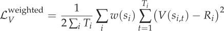
Response i has prompt si, return Ri, and Ti valid tokens; si,t is its prefix at token t. The denominator averages over the batch’s valid tokens. Estimating weights from the same returns can introduce bias, but works well in our experiments.
A floor tied to reward range and group size
For discrete rewards with range Δ, consider a group with one maximum return and n − 1 minimum returns. We choose the floor to be approximately half this reference group’s standard deviation:
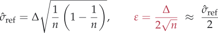
With inverse-STD weighting, a group whose returns are all identical then gets about twice the weight of the reference group. For n = 16, this gives ε = 0.125 for Search-R1’s [0, 1] rewards and ε = 0.25 for AIME’s [−1, 1] rewards. FrontierCS has continuous rewards; we retain ε = 0.075 from our initial experiments.
The same pattern appears in actual gradients
As the critic learns, return noise accounts for more of the gradient scale. In the offline comparison below, the dependence on return variability becomes stronger at later checkpoints. Applying the weights largely flattens it, although some individual outliers remain. Each response contributes its summed token gradients divided by the batch’s total token count.
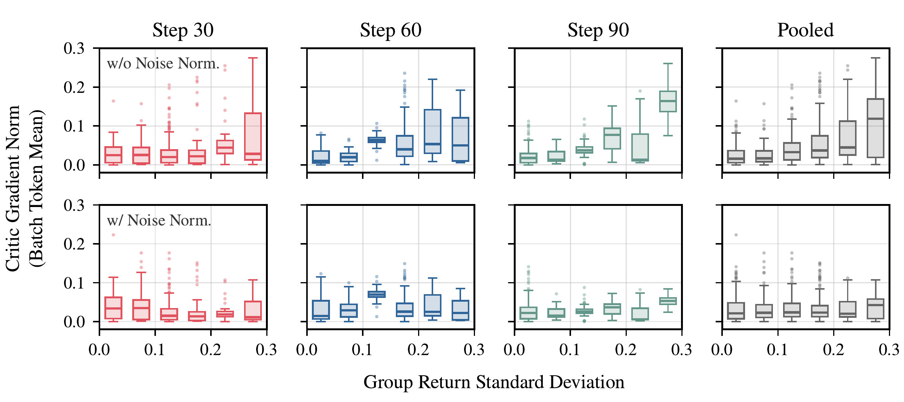
Smaller mini-batches make clipping more local
Gradient clipping rescales an entire mini-batch gradient when its norm is too large. If one outlier dominates a large mini-batch, clipping scales down everyone’s contribution together. Splitting the batch means fewer responses are affected by that outlier.
There is a trade-off: smaller mini-batches also average out less return noise. Our idealized analysis captures these opposing trends. The bound on a single outlier’s influence grows with mini-batch size, while the gradient variance falls with it. Smaller is therefore not always better.
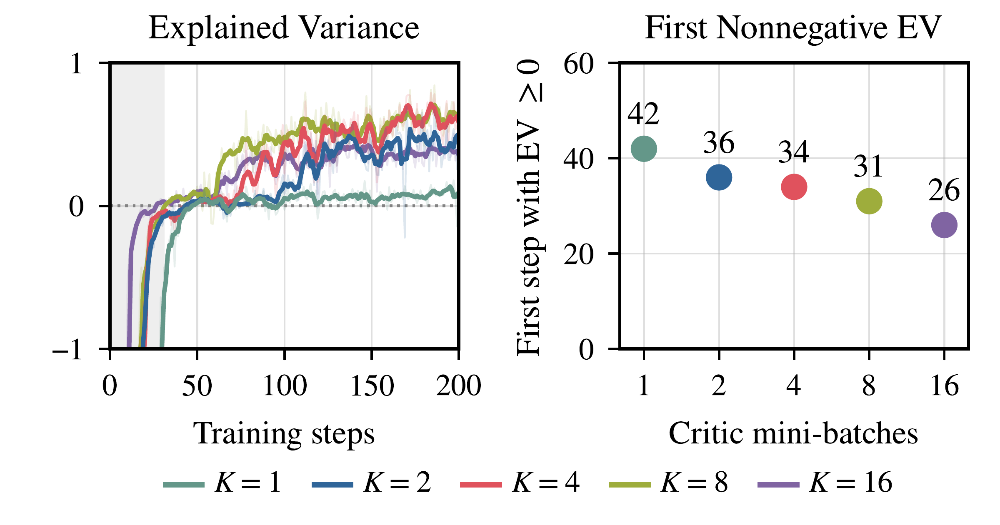
Higher scores, without late training collapse
We test continuous-score coding on FrontierCS[3], single-turn math on AIME24, and multi-turn search on Search-R1[4]. EasyPPO achieves the highest best-checkpoint validation score on all three. Over the evaluated training horizons, it is also the only compared method that stays stable across all three tasks.
We compare against PPO, PPO + actor-only filtering, HL-Gauss PPO[5], and VAPO[6], omitting VAPO’s auxiliary positive-example language-modeling loss.
All methods train strictly on-policy in verl[7], with 30 critic warmup steps. For FrontierCS, we initialize Qwen3.5-9B[8] with SFT on FrontierSmith[9] trajectories; AIME and Search-R1 use Qwen3.5-9B-Base.
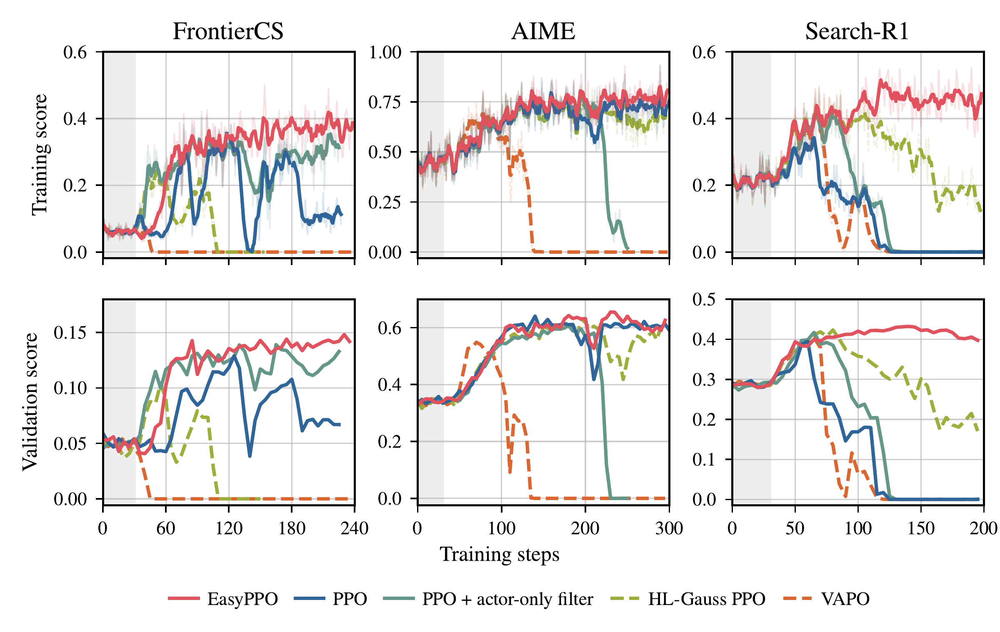
| Method | FrontierCS | AIME24 | Search-R1 |
|---|---|---|---|
| PPO | 12.90 | 64.06 | 39.48 |
| PPO + actor-only filtering | 13.91 | 60.73 | 41.74 |
| HL-Gauss PPO | 10.43 | 63.13 | 42.33 |
| VAPO | 5.58 | 54.90 | 40.36 |
| EasyPPO | 14.82 | 65.52 | 43.22 |
Comparing each method’s best checkpoint, EasyPPO improves on PPO by 14.89% on FrontierCS, 2.28% on AIME24, and 9.47% on Search-R1.
A steadier critic accompanies steadier training
On FrontierCS, EasyPPO’s critic gradient norm declines after warmup, and its explained variance improves smoothly. The other methods show larger swings. High explained variance alone is not enough: HL-Gauss reaches nearly one after its actor has already collapsed, when predicting the consistently low return becomes easy.
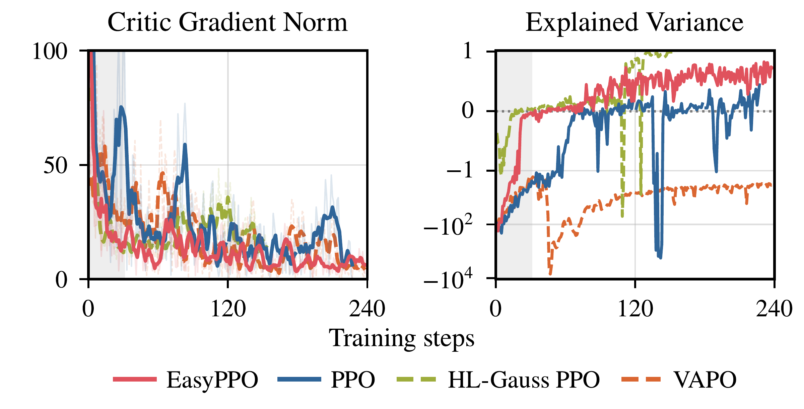
Normalization creates room for smaller mini-batches
We hold the critic learning rate fixed and compare one versus four mini-batches, with and without normalization. Normalization helps both configurations. Without it, the drop with one mini-batch is recoverable, but four smaller mini-batches collapse. This matches the trade-off: splitting more finely makes return noise harder to average out.
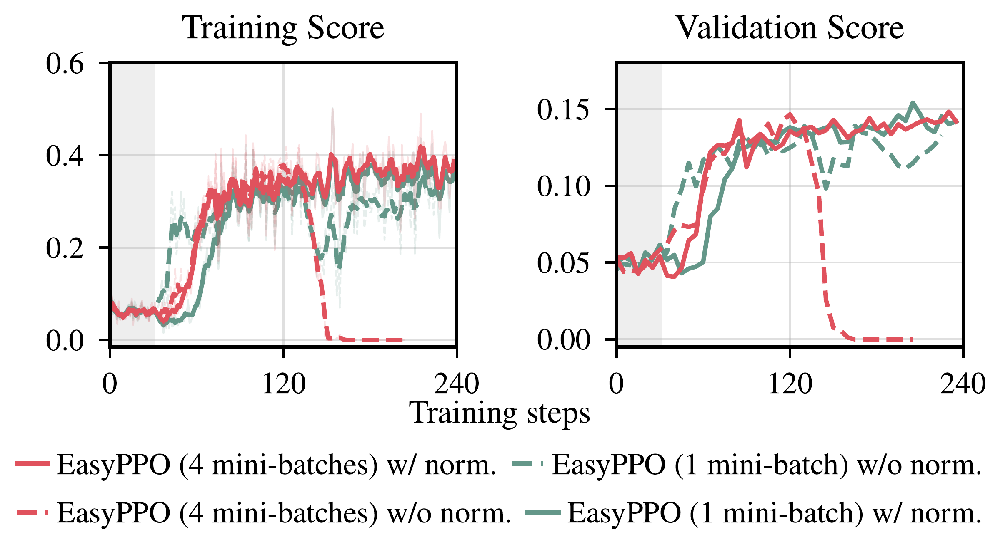
Does this depend on critic initialization?
We repeat EasyPPO and PPO + actor-only filtering three times on FrontierCS, changing the critic initialization. None of the three EasyPPO runs collapses; two of the three actor-only-filtering runs do.
EasyPPO also keeps a narrow range of validation scores across runs.

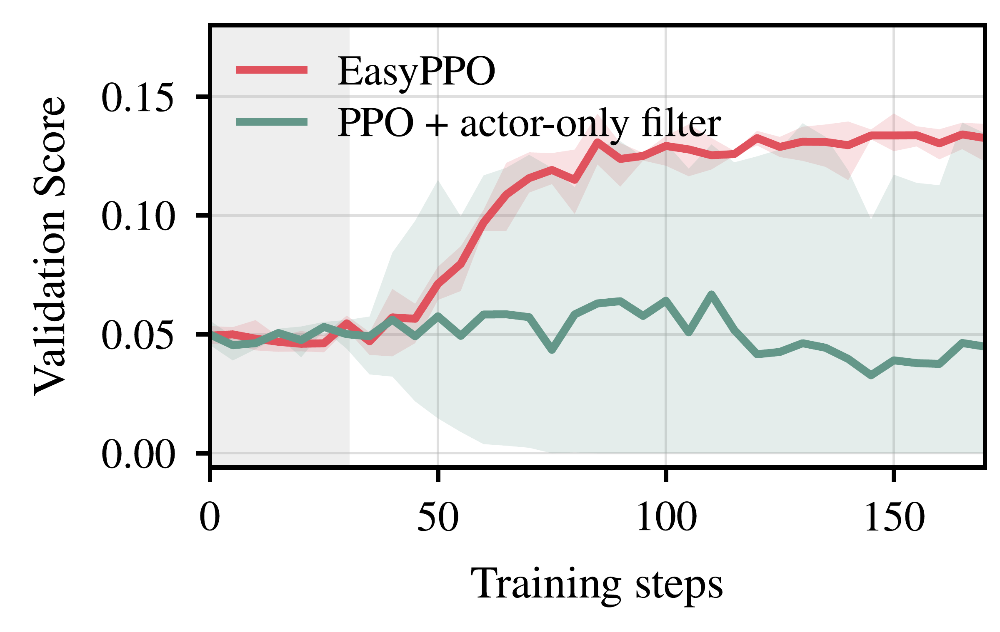
The standard PPO actor can learn reliably when the critic receives complete data, balanced return noise, and updates that contain the remaining outliers.
References
- Schulman et al. (2017). Proximal Policy Optimization Algorithms.
- Li et al. (2026). When Do Larger Batches Help Scale LLM Reinforcement Learning?
- Mang et al. (2025). FrontierCS: Evolving Challenges for Evolving Intelligence.
- Jin et al. (2025). Search-R1: Training LLMs to Reason and Leverage Search Engines with Reinforcement Learning.
- Zhou et al. (2026). Start Classifying: Categorical Critics for LLM Reinforcement Learning.
- Yue et al. (2025). VAPO: Efficient and Reliable Reinforcement Learning for Advanced Reasoning Tasks.
- Sheng et al. (2025). HybridFlow: A Flexible and Efficient RLHF Framework.
- Qwen Team (2026). Qwen3.5: Towards Native Multimodal Agents.
- He et al. (2026). FrontierSmith: Synthesizing Open-Ended Coding Problems at Scale.
BibTeX
@misc{zhou2026easyppo,
title = {EasyPPO: Stabilizing the Critic Is Key},
author = {Xuanyi Zhou and Qiuyang Mang and Dacheng Li and
Wenhao Chai and Mayank Mishra and Yichuan Wang and
Karthik Narasimhan and Alvin Cheung and Joseph Gonzalez},
year = {2026},
url = {https://easyppo.github.io/}
}